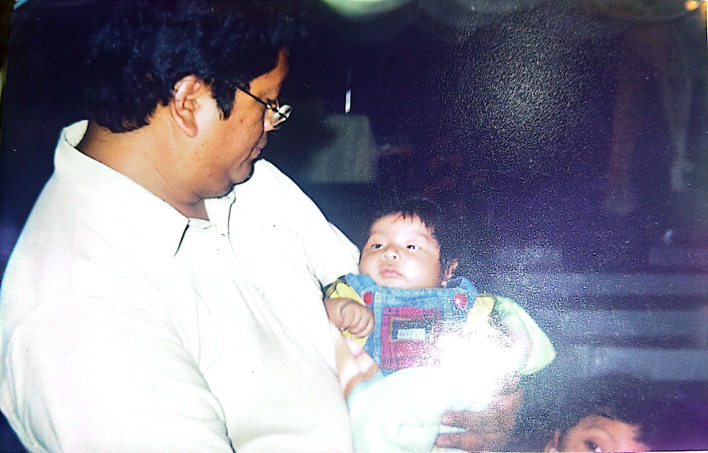
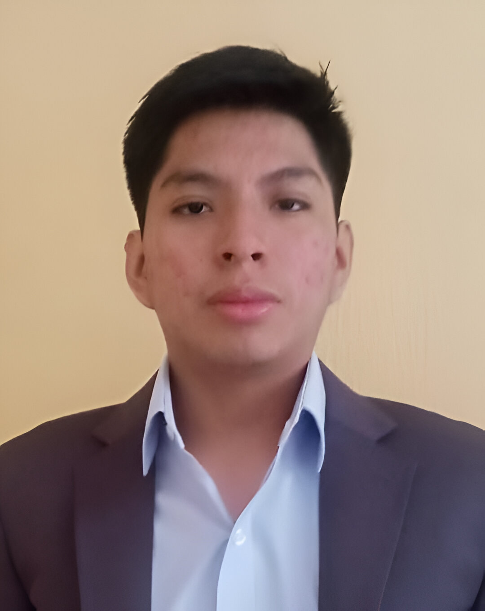

Historia Familiar
La historia de mi familia remonta desde mis abuelos, algo muy curioss de mis abuelos es que ambos tienen el mismo nombre, mis abuelas se llaman Martha y mis abuelos se llaman José.
Mis abuelos de parte de mamá son capitalinos ellos crecieron el la zona 7 de Guatemala, cuando se casaron ellos se mudaron para la zona 19 la florida donde formaron su hogar con 6 hijos (4 mujeres y 2 hombres). Mi abuelo se dedico a la albañeria y mi abuela tenia un puesto de comida, donde vendia comida tipica como tostadas con guacamole, frijol y salsa, tacos y pupusas, rcuerdo que a mis hermanos y primos nos encantaban las pupusas.
Mi abuelo de parte de mi papá es originario de Coban (En Coban el apellido Tzul es muy conocido) y mi abuela es de salama ellos se casaron y formaron una famila en Colinas de minervas donde formaron una famila de un hombre y una mujer. Lamentablmente mis 2 abuelas fallecieron un tiempo atras mi abuela de parte de mi papá fallecio en 2016 y mi abuela de parte de mamá fallecio en 2022. Mis dos abuelos sigue con mida y con buena salud
Mis padres se conocieron cuando eran jovenes y estudiaban en la misma escuela, mi papá era muy amigo del hermano de mi mamá y ahifue donde se conociero, ellos contrajieron matrimonio en 1997 al año nacio mi hermano mayo, (Jose 1998) Hubieron muchos problemas durante el nacimiento pero gracias a Dios todo salio bien, luego a los meses mis padres compraron su primera casa donde ahora vivo. Al poco tiempo despues nacio mi segundo hermano (Pablo 2000) luego el tercero (Isaac 2002) y finalmente yo, el menor (David 2006), algo curiosos es que tengo un primo que nacio el mismo año que yo pero un mes despues, crecimos juntos no solo cuando eramos bebes sino que tambien en la niñez
Niñez
Mi niñez fue muy divertida recuerdo que siempre que inicior pre-kinder con mi primo en la misma escuela, cuando regresabamos de estudiar mi abuela siempre ivamos a la casa de la abuela a almorzar y ver television recuerdo que nos encantaba ver caricaturas, mirabamos Ben 10, Dragon ball, Bob esponja muchas caricaturas todavia recuerdo esos dias despues de eso ya con 11 o 12 años recuerdo que a mi primo le compraron una consola en este caso una play station 3 recuerdo que pasabamos horas jugando y justo en esta epoca fue cuando mi papa comro la primera computadora personal recuerdo que lo primero que hicieron mis hermanos fue comprar una version del Fifa 2007 para poder jugar en la computadora, esa fue la primera interaccion que tuve con una computadora, luego llego la epoca de las redes sociales donde Facebook y Youtube explotaron y revoluzionaron nuestra cultura. Desde mi adolescencia estuve rodeado de las computadoras desde ahi nace mi interes en la tecnologia y como ha evolucionado nuestras vidas, la niñez fue una etapa que disfrute mucho

Adolescencia
Mi adolescencia fue marcada por el futbol y las peliculas de superheros, el futbol simepre ha estado marcado en mi vida, toda mi vida he sido un fanatico del Real Madrid, recuerdo que empeze viendo el futbol italiano luego empenze viendo el futbol Ingles al final quede fanaticado por el Real Madrid. Desde pequño siempre me facinaron los superheros series animadas como spider-man, batman y los X-men fueron grandes pasatiempos, en mi adolescencia fue donde el cine de superheros subio y se creo el UCM (Universo Cinematografioco de Marvel) peliculas como Iron Man y Capitan America pusieron los simientes para todo un nuevo univeros que hoy en dia es el mas exitoso en el cine, aun sigo siendo fan desde pequeño que siempre ivamos al cine con mis hermanos y ahora segumis teniendo esa costumbre siempre que hay una pelicula de mMarvel siempre vamos al esreno ya es mas que una tradicion. En mi adolescencia conoci a mis mejores amigos que estudie con ellos hasta finalizar el bachiller con ellos tengo una infinidad de recuerdos.

Personal
En mi actualidad ha cambiado mucho ahora mismo estudio, trabajo, trato de hacer ejercicio y me gustaria enfocarme mas en mi carrera es algo qu debo de estar enfocado. Sinceramente si me gusta mi carrera me llama mucha la atencion todo relacionado a tecnologia desde repara una computadora a programar un pequeño programa de lo que sea tambien soy algo fanatico de las matematicas es algo que me desafia y me gusta, estoy orgulloso de la decision que tome de estudiar. Ahora mismo estoy trabajando en un call center de ingles, es una buena empresa pero no es un trabajo que me gustaria desarrollar mas de un año, ya estoy buscando otras alternativas para empezar a ejercer mi carrera que es lo mas importante que tengo la unica razon porque decidi trabajar fue para poder pagar la carrera he estudiar, quiero tomar otra vez esa idea y enfocarme mas en la Universidad
Personalmente me siento bien al final se cumplio lo que pedi estudiar y poder trabajar, lo que me gustaria hacer es madurar y enfcrmen en mi trabajo en la U y mejorar como hombre me siento orgulloso de como avanzo en mi carrera pero avecez si es muy cansado y si deboparar un poco. Gracias a Dios tengo una buena relacion con mi familia con mis padres y hermanos y he conicdo buenas amistades